Blogitekstit · Maaliskuu 2020
Löysien siimojen miehet - onnistumisia Kokkolassa ja Lapinlahdella

Vuonna 2018 kun istuimme pilkillä Kokkolassa Timi Laitisen ja Erä-lehden toimittaja Jari Tuiskusen kanssa sain idean, mitä jos samalla reissulla yhden viikonlopun aikana ajaisi Kokkola-Lapinlahti reissun?
Autolla halki Suomen, etäisyyttä kahden lajin välillä vain 255 km. Ankeriaan saaminen jo talvella vapauttaisi aikaa kesälle ja se sopisi myös suunnitelmaani viettää mahdollisimman vähän aikaa kalassa.
Alkuvuosi on mennyt suunnitellusti, ainoat pummit ovat toistaiseksi olleet härkäsimpusta ja kampeloista, jotka eivät onneksi ole "sesonkilajeja" joilla olisi vain pieni aikaikkuna, minkä aikana ne pitäisi saada jallitettua.

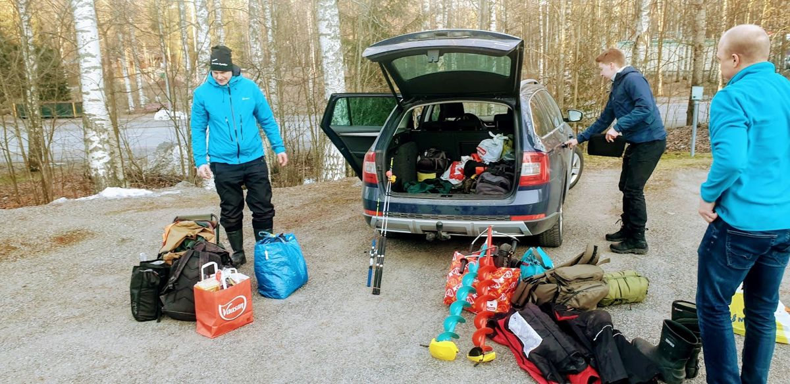
Retken kustannuksia jakamaan lähti samalla kyydillä Timi, Heinolassa asuva Miika Kovanen ja Kotkasta Petri Ristola. Kahdelle jälkimmäiselle muikku ja ankerias olisivat elämänpisteitä.
Ilman suurempaa ristiin ajamista sovimme, että Petri ajaa Miikan luokse Heinolaan, josta me Timin kanssa nappaamme heidät kyytiin. Matkalle olin sopinut Vaajakosken Naissaareen kenttälounaan Kojamo Äijä ja Huopana Fly:n tekijän Juha Oravan luokse. Lisäksi retkeemme liittyi Turusta Petri ja Ville Tynkkynen sekä Helsingistä veljekset Patrik ja Markus Lauha.

Kyllä kääntyi suupielet matkalaisilla hymyyn, kun vastaan tuli "lehmän" kokoinen koira nimeltä Iita ja isäntä Juha. Sisällä olohuoneessa kynttilät loistivat, tuoreista sämpylöistä nousi höyry ja hirvikeiton maukas tuoksu leijaili keittiöstä. Alkusnapsien tarjoilusta kieltäydyin ja annoin muille luvan nauttia, ilmoittauduin siis kuskiksi loppuillalle.
"Kun keitetään keitto, laitetaan kilo lihaa ja yksi peruna, toteaa keiton pöytään tuova isäntämme Juha."
Keitto oli erinomaisen makuista ja sen kruunasi vastaleivotut talon rouvan leipomat sämpylät. Kiitos niistä.
Aika kiiruhti eteenpäin vaikka olisi voinut madella, ruoka maistui ja juttu lensi. Meidän piti kuitenkin ehtiä Motonettiin ostamaan öljyä Timin autoon. Ruoan jälkeen markakiissesiä jälkkäriksi, kahvit ja konjakit.
"Mihin autoon, kysyi isäntämme".
"Skoda Scout, vastasi timi".
Hetken päästä Timin käsiin ilmestyi iso öljykanisteri.
"Ei tarvitse, me käydään hakemassa Motonetistä", totesi Timi.

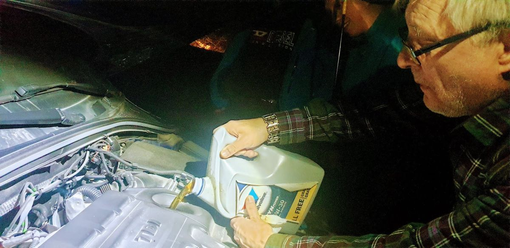
Oli aika lähteä, isäntämme Juha tuli kanisterin kanssa ja laittoi hieman öljyä koneeseen todeten, että laitetaan pikkasen, ettei mitään käy.
"Mittatikku ylös, nyt sielä on tarpeeksi. Teidän ei tarvitse käydä Motonetissä ollenkaan."
Huikeaa palvelua, kiitos kaima.
Loppumatka meni leppoisasti rupatellen ja lopulta hotellilla iltakalja nassuun ja nukkumaan.
Paikallisten opissa - siikapiste hakusessa

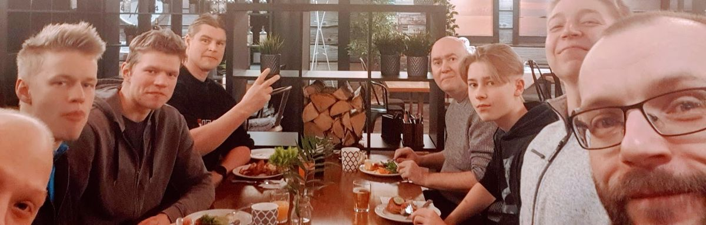
"Laitan herätyksen kuudelta soimaan."
Todellisuudessa kello meni väsymyksen johdosta viideksi sekä kuudeksi. Näistä jälkimmäinen hiljaisena versiona ja ensimmäinen todella kova äänisenä.
Voi sitä riemua mikä syntyikään, kun matkarasituksista toipuva retkikunta heräsi tuntia liian aikaisin katsomaan kelloa. "Salonen" ja muutama ärräpää kuului petien pohjalta ennen silmien ummistusta.
Puoli seitsemän oli aamupala, varasimme pöydän mihin mahduimme kaikki kahdeksan istumaan. Haimme aamupalat pöytään ja kerkesimme aloittamaan syömäänkin ennen toisen huoneen seurueen liittymistä seuraamme. Päivän suunnitelmat lyötiin lukkoon, sovittiin paikat ja juteltiin mukavia.

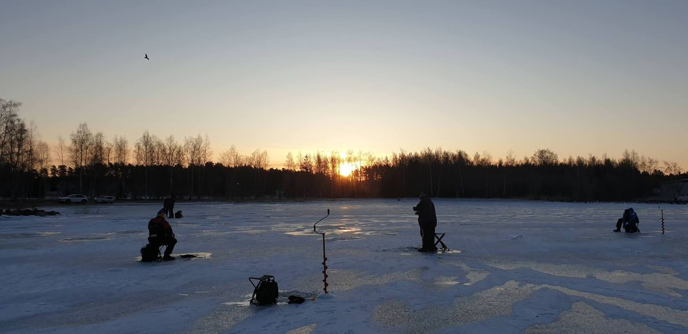
Aamu alkoi kylmästi, -15°C astetta pakkasta, mutta täysin pilvetön taivas. Päivästä tulisi upea. Lähdimme kohti Yks Pihlajan uimarantaa jonne olimme saaneet ohjeet mennä. Myös Harri ilmoitti läsnäolostaan ja kertoi saapuvansa samalle paikalle.
Vuoden 2018 tutkimusretki muikunpilkinnän saloihin antoi kaiken olennaisen infon. Pientä morria, pientä syöttiä ja suunnaksi Isokarin reunamat. Tuolloin muikun saamiseen meni vain hetki, samoilla ohjeilla lähdimme myös nyt muikkujahtiin. Pientä morria, pientä syöttiä vai paikka vaihtui. Siirryimme saamiemme tietojen mukaan Yks Pihlajan uimarannalle pilkkimään.

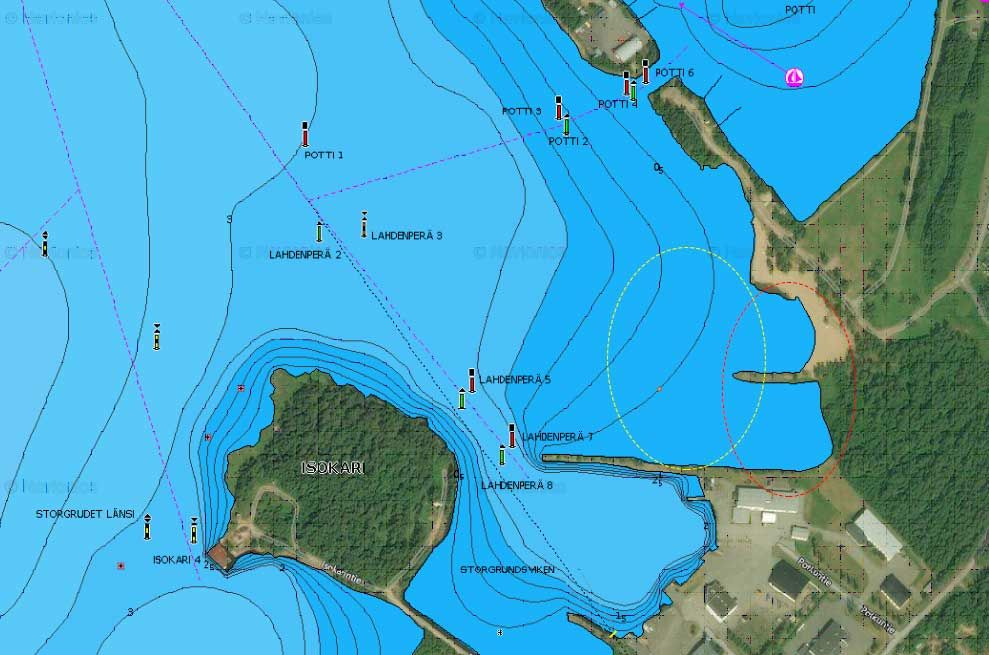
Paikallisinfoa Esko Sorvalin sijaan antoi custom vapojen rakentamisesta tutuksi tullut Pekka Kemppainen, tutustu tästä Facebookissa hänen tekemiin vapoihin. Pekka myös kertoi lähtöä edeltävänä iltana, että Kokkolan kalaseuran alueella on siialle määritetty seuran toimesta 25 cm alamitta.
Tämä hieman lisäsi haastetta reissulle ja olin valmis paikkoreissuun Stadin tai Espoon rannoille siian osalta.
Muikku napsahti ensimmäiseltä reiältä kohtuu nopeasti minkä jälkeen vaihdoin siianpilkintään. Vierestä muut yrittivät muikkuja ja jäällä käytettiin vain alamittaisia siikoja, sekä kuoreita, jotka matkaisivat ankerias-syötiksi Lapinlahdelle.

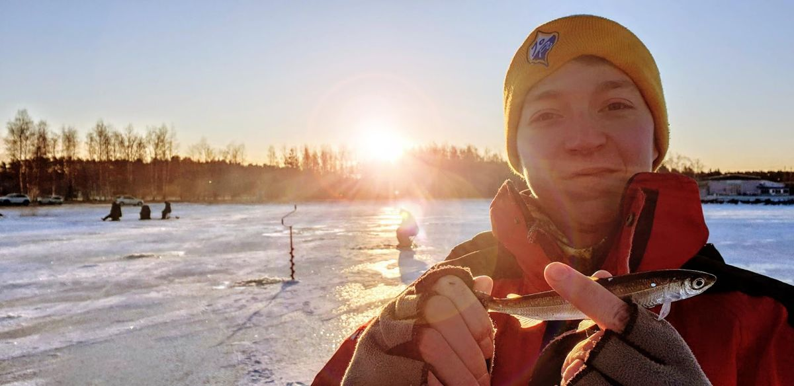
Vaihtaessani morria isompaan ja toukkaa kokonaiseen puolikkaan sijaan alkoi nousemaan jopa enemmän pieniä muikkuja kuin siikoja ja oli joukossa pari ahventa ja särkeä.
Välittömästi rannan tuntumassa oli paikallisia pilkkijöitä, he olivat olleet paikalla jo ennen meidän saapumista paikalle. Yksi heistä, Raija Haasanen tuli juttelemaan porukkamme kanssa ja itsekin liityin keskusteluun.
"Muikkupiste tuli, mutta nyt pitäisi saada yli 25 cm pituinen siika, kerroin Raijalle".
Kerroin myös, kuinka tavoittelen uutta Suomen ennätystä ja miten olimme käyneet tutustumassa muikunpilkintään vuonna 2018.
Raija pyysikin minua liittymään heidän seuraansa ja tein työtä käskettyä. Yksi seurueen jäsenistä kairasi minulle reiän ja putsasi sen pyöräyttämällä koneella loskat pois. Istuin jakkaralleni.
"Mitä teen nyt, että saan yli 25 cm siian", kysyin seurueelta.
"Laitat ison nipun toukkia, tiputat morrin pohjaan ja odotat hetken. Sitten pientä nypytystä", kuului vierestäni.

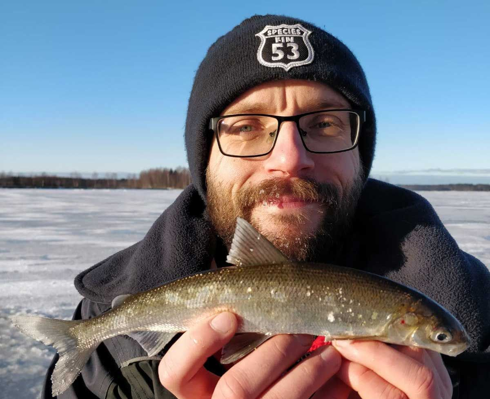
Näin tein, kolmas pieni nykäys sai kohdalle uineen siian hämilleen ja nappaamaan morriin. Yhdellä vedolla kala ylös ja huuto: TIMI, tuutko kuvaa!
Paikalle Timin sijaan tuli Miika, joka nappasi kuvan. Jatkoin vielä hetken siikojen näköpilkintää, kunnes tuli aika kiittää seuruetta ja luovuttaa ravintoketjun jatkeeksi saamani siika kiitokseksi Raijalle. Taas oppi jotain uutta, on varmasti mahtavaa näköpilkkiä suuria siikoja alle metrin vedestä.
Ehkä vielä joskus...

Iloista miestä oli myös aamu kolmelta Lievestuoreelta ajamaan lähtenyt Harri Pylväläinen, jonka elämänpistesaldo kasvoi kolmella lajilla tällä reissulla, loppupäivän hän pystyi keskittyä geokätköjen etsimiseen.

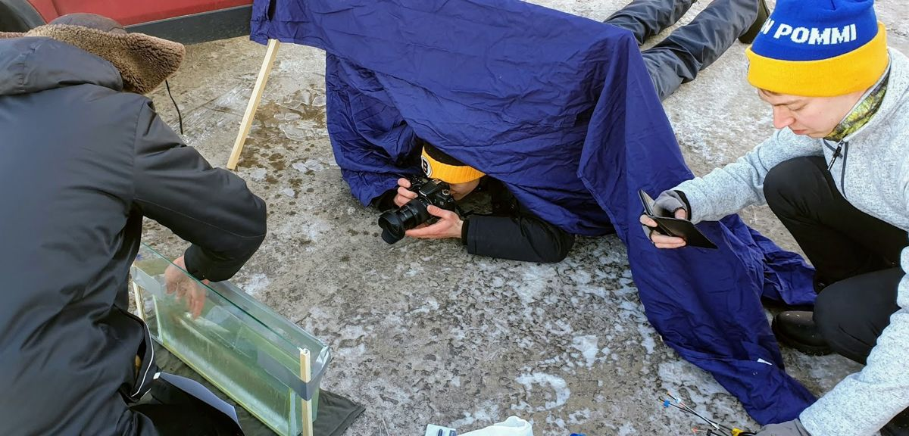
Lopulta Patrik ja Markus saivat muikkuja ämpäriin ja aloittivat "vaativan" kuvausprojektin, eli studion rakentamisen. Itse seurasin kauempaa rakentelua ja lopulta menin lähemmäksi katsomaan, hetken kaikki ihailimme jätkien virityksiä ja kuvailua kunnes starttasimme matkalle kohti seuraavaa etappia.
Tutustu jätkien projektiin tästä ja lue Patrikin blogia tästä.
Halki Suomen - "pieni" siirtymä pelipaikoille

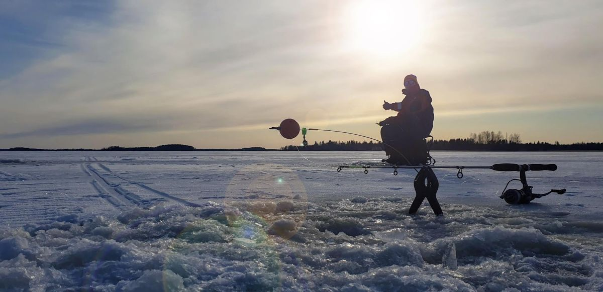
Lapinlahdella ankeriaspilkillä käynti juontaa juurensa Miika Nymanin päivitykseen Facebookin kalastusryhmässä. Video millä hän nostaa ankeriaan ylös herätti mielenkiintoni jonka lopputuloksia tällä reissulla ammennetaan.
Myös nyt oli Miika lähdössä oppaaksemme ja odottikin Matin ja Liian asemalla saapumistamme. Digitaalikellon pikselit piirtyivät aikaan 14:20 kun käännyimme kohti oppaamme autoa.
Hyppäsin oppaan autoon ja jatkoimme matkaa. Vasen-oikea-vasen-oikea, puikkelehdimme omakotialueen läpi kohti järven rantaa. Lopulta määränpää saavutettu ja tutut muistot tulivat mieleen.

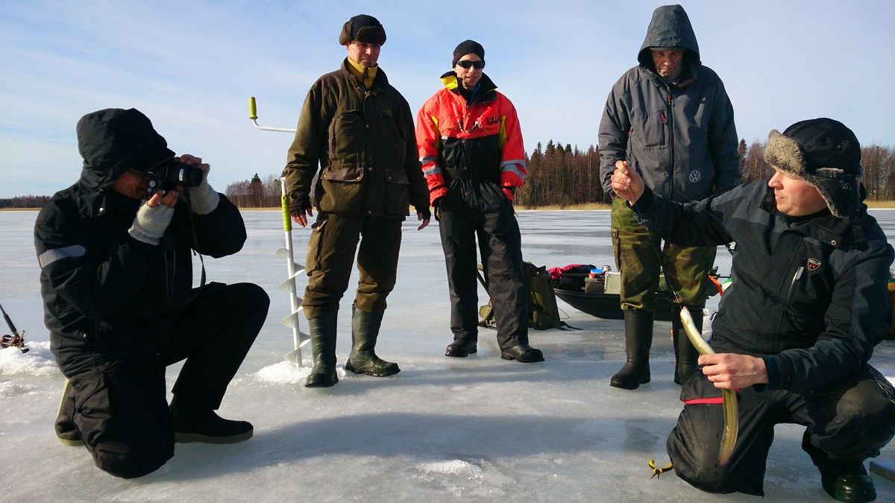
Noissa muistoissa on upeimpana Timin elämänpiste ankeriaan jäälle nouseminen, isäni keittämät nokipannukahvit ja paikalliset Miika ja Pekka. Unohtaa ei saa sitä 1100 km tai Tuiskusen kertomia kalatarinoita matkan varrella, tai ankerias-leiriä jolla oli mukana myös Urpoerämies Production, sekä Lauri Asanti ja Jani Korelin.
Näihin muistoihin voi palata tästä. Nyt oli aika kuitenkin kirjoittaa uusia muistoja, uusien kalakavereiden ja ystävien kanssa.
Kävelimme tutulle ottipaikalle, viritimme jokainen yhden vavan pyyntiin ja odotimme. Odotimme ja odotimme. Muutama karvas tärppi, jonka lopputuloksena syötti vietiin.
Lopulta yksi vippa niiasi.
"Tuossa vavassa on kala!"
Huusi kauimpana pilkkivä oppaamme Miika.
Patrit nappasi siimasta kiinni ja tempasi vastaiskun, kiinni on. Nyt jännitettiin, onko ankerias, kuha vai kenties joku muu kalalaji?
Vuonna 2014 sain nauttia onnistumisen hetkistä Timin kanssa, seurana silloinkin oli paikallisten Miika Nymanin ja Pekka Turusen lisäksi myös isäni ja Tuiskusen Jari. Olimme aamuyöllä lähteneet ajamaan halki Suomen tutustumaan talviseen ankeriaan kalastukseen. Tuon uskomattoman Jarin kanssa kalassa feat Fongarit -tarinan voit lukea tästää.
Nyt elämänpiste kiljahdukset kaikuivat järven jäällä Patrikin toimesta.

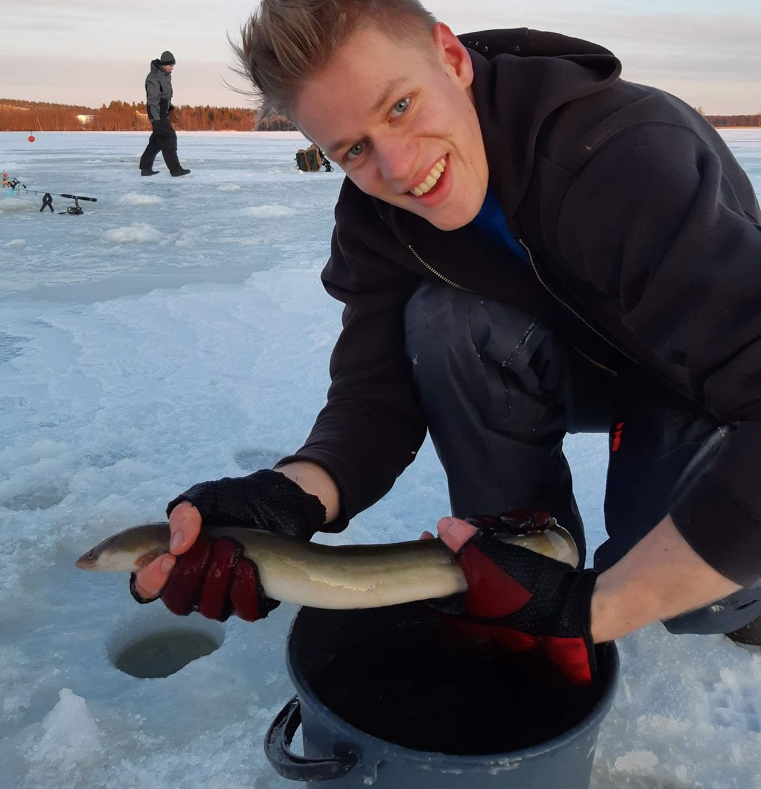
Tätä kaikkea Fongaus, eli lajikalastus voi antaa. Kaikki lähti Kalamaratonista, ja nyt lajijahti käy kiivaana läpi vuoden.
"Kalamaraton-valmistautumisessa syttynyt lajikalastus-kipinä johti Markuksen kanssa ajatukseen kalakuvausprojektista. Tavoitteena olisi pyydystää niin monta suomalaista kalalajia, kuin pystyisimme ja valokuvata nämä mahdollisimman luontaisessa elinympäristössä - siis vedessä ja mieluiten vieläpä oikeanlaisen pohjan ja taustamaiseman kanssa." -Patrik Lauha
"Ankerias"

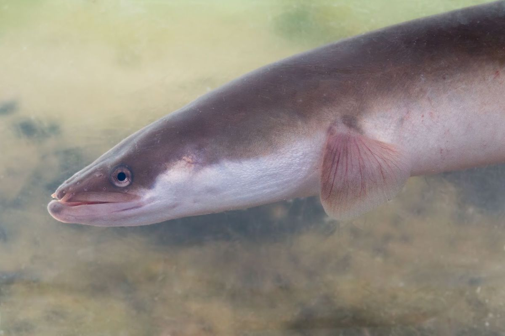
Onneksi olkoon huusivat kaikki vierestä seuraavat. Nopeasti vettä ämpäriin ja kala odottamaan kuvattavaksi pääsyä. Kuvausta tuli seuraamaan myös pilkiltä palaavat paikalliset kalamiehet, hauskan tapaamisesta teki lopulta se, että he tunnistivat minut Longinoja Saloseksi ja siitä juttua riittikin.

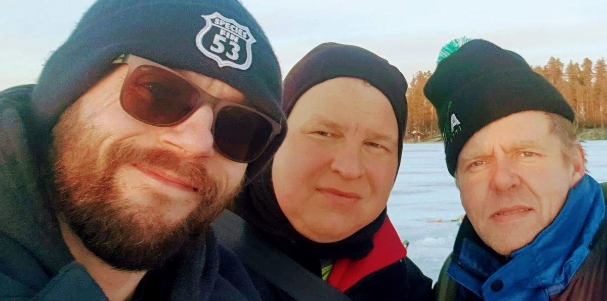
Upeaa nähtä, kuinka Longinojan ilosanoma on kantautunut tännekin päin Suomea. Kiitos herrat Savolainen Kari ja Puhakka Tuomo pysähdyksestä ja kivasta juttelu hetkestä.
Muutama karvas karkuutus ja siimojen katkeaminen koettiin vielä ennen iltaa.

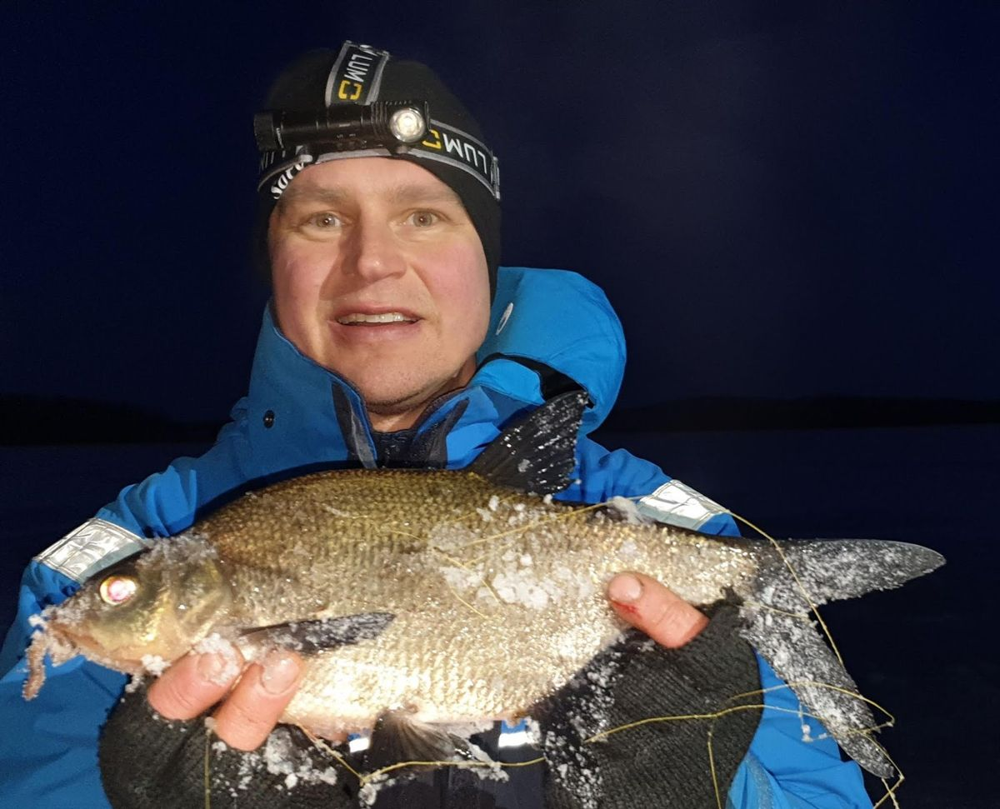
Ilta laskeutui järven ylle, kirkas pilvetön taivas toi seuraksemme loppu universumin ja tuhannet tähdet. Petri siirtyi pilkkimään kuhaa pystypilkillä, jonka varusti suurella mormuskalla jonka syötitti suurella matonipulla. Ei aikaakaan, kun kala nousi jäälle, kuha. Hetkeä myöhemmin taas kala ylös, nyt vuorossa lahna. Oli aika pakata kamat ja luovuttaa tältä päivältä, yksi ankerias valoi uskoa sunnuntaille.

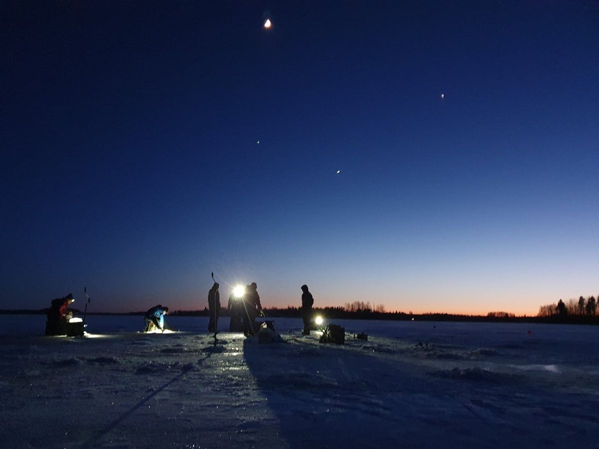
Väsyneenä lopettelimme kalastuksen pakkasen kiristyessä ja otimme suunnan kohti rantaa. Laitoin myös majapaikkaamme viestiä aikaistuneesta tulostamme.
Pakkauduimme autoon ja otimme suunnan kohti Kalaopas Finlandin, eli Timo Räsäsen kotia Kuopiossa ja Lauhan veljeksi ystävänsä luokse. Oli hienoa saapua vieraanvaraisen kalaoppaan perheen pariin ja päästä suoraan lämpimään saunaan. Retkiporukkamme majoittui yläkertaan kissojen ja undulaattien seuraan.
Aamulla heräsin jälleen viideltä, aloitin kuulemma suhinoimaan ja taisin taas herättää koko yläkerran.

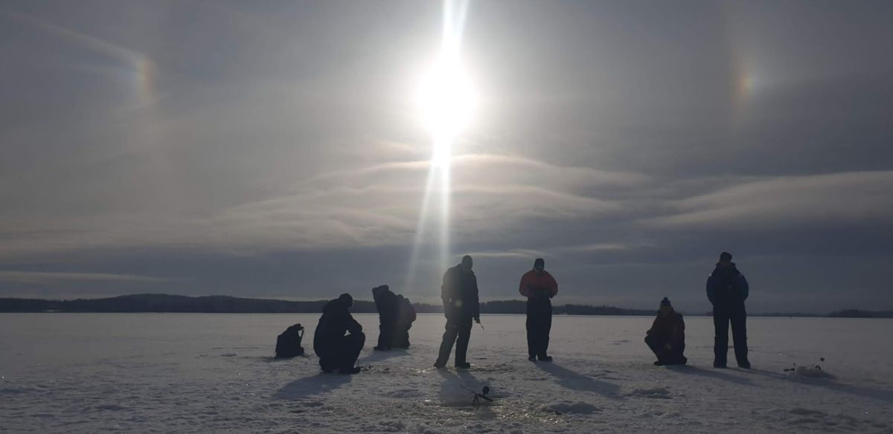
Hivenen ennen kuutta kömmin alakertaan ja isäntämme Timo olikin kahvit keittänyt, siinä juttelimme hänen yritysideasta, kalastusfilosofiasta ja kiireettömästi elämyksiä tarjoavista kala -ja eräretkistä. Kello pärähti yläkerrassa, ja loppu porukka siirtyi pöydän ääreen. Vajaassa tunnissa aamupalat oli syöty, kamat pakattu ja autot startattu.
Ajellessamme Kuopion keskustan ohi soi puhelimeni.
"Onko syötit sulla?, kysyi Miika.
Ei, eikö ne ole teilläkään vastasin. Sovimme, että toiset autokunnat painaa pelipaikoille ja me Timon kanssa ajamme syötit hakemaan.
Syötit kyytiin ja uusi startti.
Perille pelipaikoille päästyämme katsoin, että nyt on tutun näköinen henkilö liittynyt pilkkiseuraamme.
Pekka perkele!

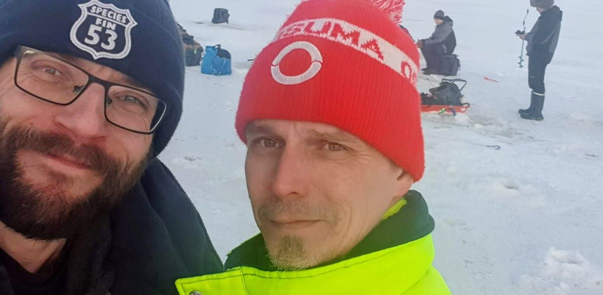
Legendaa oli pakko halata ja välineiden pyyntiin laitoin jälkeen vaihdella kuulumiset hänen kanssaan. Myös Kuopiosta Matti Kimonen kaverinsa Jouko Taskisen kanssa olivat liittyneet joukkoomme, leppoisaa saada paikallista juttuseuraa mukaan, joita näkee harvoin.
Aikaa kului, olimme sopineet starttaavamme kotimatkalle viimeistään klo 17, mutta uhkaava ajokeliä huonontava lumisadealue aikaisti lähtöämme. Pari tuntia vielä, lumisade hiljalleen koveni ja järven selän toisella puolella horisontti katosi näköpiiristä.

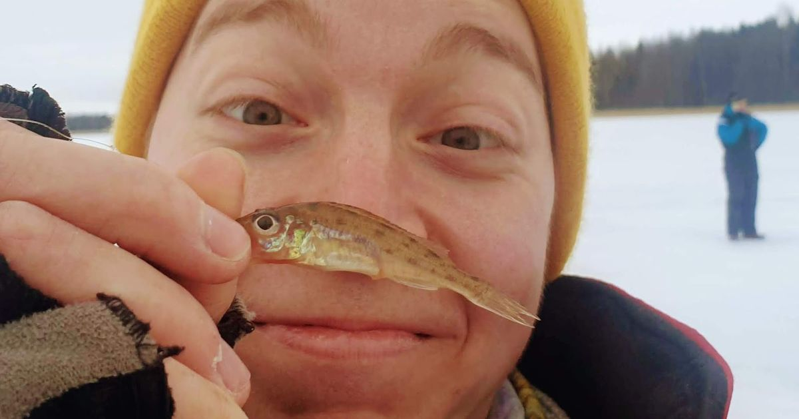
Ristolan Petri on tullut tutuksi Kotkan Kalamaratonista, ja tämä Kymijoen lohen kalastuksen taitava herra on narahtanut myös Fongailuun. Nyt hän viritti Timin ohjeiden mukaan siiman päähän pienen koukun, hieman koukusta pienen haulin ja "ankeriaskortsun". Kortsun sisään hän silppusi muutaman kalanpalasen. Koko viritys pohjaan ja lipuksi palanen muovipussia jäälle makaamaan.
Hetken päästä pussinpalanen katosi, Petri huomasi tämän ja meni vetämään vastaiskun. KALA! Onko siiman päässä uusi elämänpiste, kuha tai lahna?
ANKERIAS! JESH!
On se hienoa nähdä, kuinka aikuinen mies itkee onnesta. Kalasta kuvat talteen, koukku irti ja kala takaisin. Onnistumiseen kunniaksi avasi saajamies konjakin, josta tarjosi myös kaikille halukkaille. Onnistumisen juhlimista jatkettiin kylmän Karhun nauttimisella ja syvällä huokaisulla.

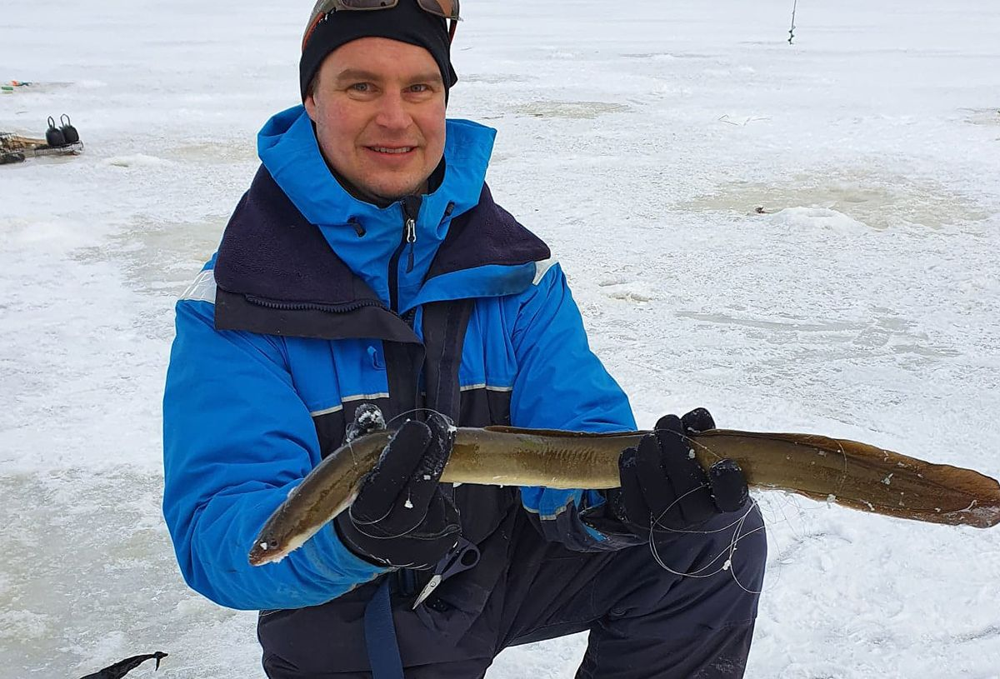
Kokeilin morritella kiiskeä, joita nousi ympäriinsä, mutta ei minulle. Onnistuin kuitenkin jallittamaan ensiksi pasurin ja heti seuraavasta reiästä myös lahnan. Miikakin sai kiiskiä sekä pasurin, joka oli hänen 19 lajinsa vuodelle 2020.
Lumisade sakeni, totesin et nyt lähdetään. Kello oli kaksi, olisimme hyvissä ajoin kotona ja saisimme ajaa hitaimman osuuden valoisaan aikaan. Myös neljältä alkava Jokereiden ja Lokomotivin välinen ensimmäinen playoff-ottelu. Ensimmäinen vapa pois, nips naps välineet reppuun.
Toisena aloin nostamaan pois Petrin neuvoilla siimarullasta tekemää viritystä. Löysät pois, vastaisku! Siima kiristyi ja tuntui kuin se olisi pohjassa kiinni. Hiljalleen siimaa nousi jäälle, noin kymmenennen nostoliikkeen jälkeen sain huutaa:
"Tuokaa ankeriashanskat!"

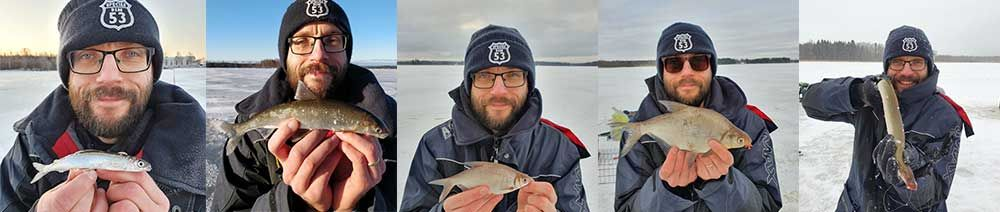
Heittäydyin polvilleni ja nostin käteni kohti lumihiutaleiden täyttämää taivasta. Taakka ankeriaan saamisesta oli tippunut pois olkapäiltä ja kesältä. Vuonna 2014 tämä paikka selvisi, 2018 retkisuunnitelman löin lukkoon ja nyt sen toteutin. 3/3. Kuvat ja kala takaisin kohti syvyyksiä.

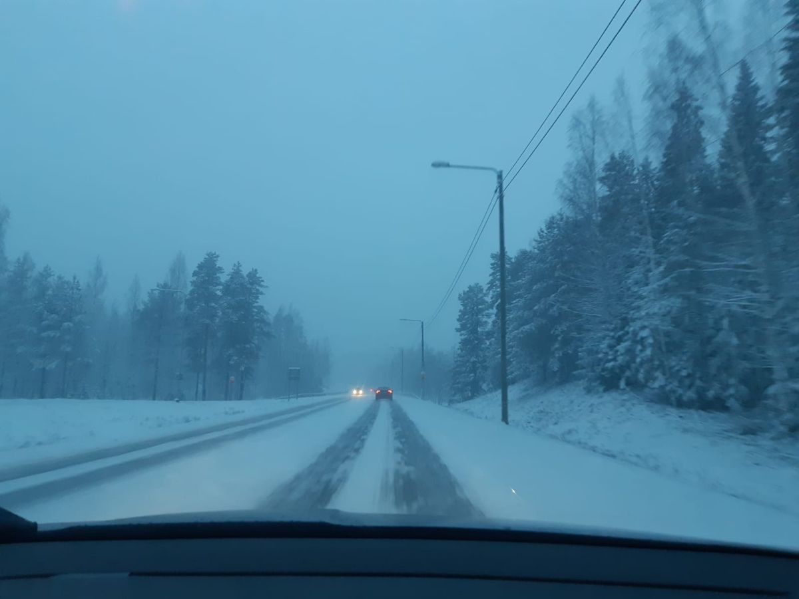
Paluumatkalla katsoimme Miikan kanssa takapenkillä, kun Jokerit antoi isännän kädestä Lokomotiv Jaroslaville voittaen heidät 6-0.
Jokereiden tykitys alkoi, kun olimme vaihtaneet Timin kuskiksi. Veli-Matti Savinainen ensimmäisen erän lopussa, kippari Peter Regin heti toisen erän alussa. Petri ”Konna” Kontiola p-pisteiden välistä, Niclas Jensen ohjaamalla Bobin laukoman vedon, Savivellu illan toisellaan ja Mikko "Bobi" Lehtonen sinetöi teurastuksen siniviivalta lähteneellä laukauksella.
Huikea viikonloppu, josta riittää varmasti keskusteltavaa tulevilla kohtaamisilla retkellä mukana olleiden kesken.
Neljän hengen kalareissu Vantaa-Heinola-Jyväskylä-Kokkola-Lapinlahti-Kuopio-Heinola-Vantaa, ajettuja kilometrejä 1470 km, yksi yö hotellissa, toinen tutun luona maksoi kulujen osalta VAIN 55 €. Tähän päälle ruoat, eli summa summarum; yhdessä tekemällä saa kustannuksia alemmaksi ja yhdessä koetut hetket tähän kaupan päälle.

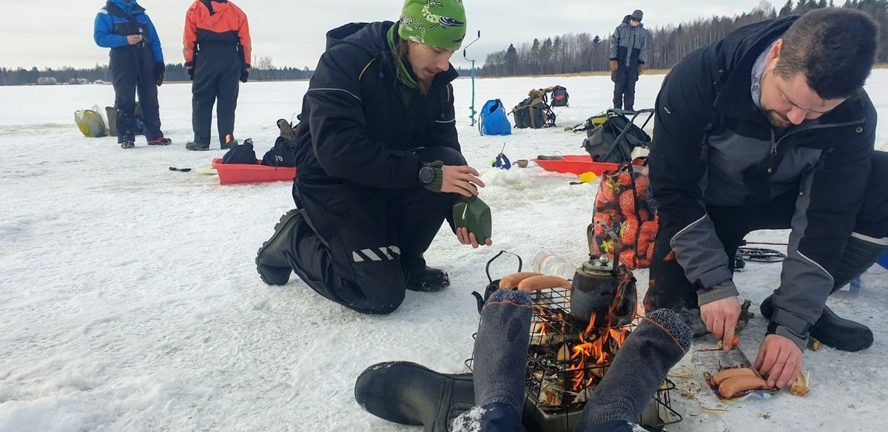
Ihmiset ja yhdessä koetut hetket. Niistä muodostuu muistoja, joita voi keinutuolissa muistella. Aivan älyttömän siisti reissu takana, lajeja nousi jokaiselle, koettiin riemun kiljahduksia ja karvaita karkuutuksia. Näistä ammennetaan voimaa seuraaviin koitoksiin.

Kiitos kaikille mukana olleille, näitä lisää ja onneksi olkoon uusista elämänpisteistä jokaiselle.
Lajeja kasassa tälle vuodelle 12 ja 41 lajia pitäisi vielä napata, mitähän seuraavaksi…
Ehkä Padvaan kampelajahtiin kivalla porukalla?

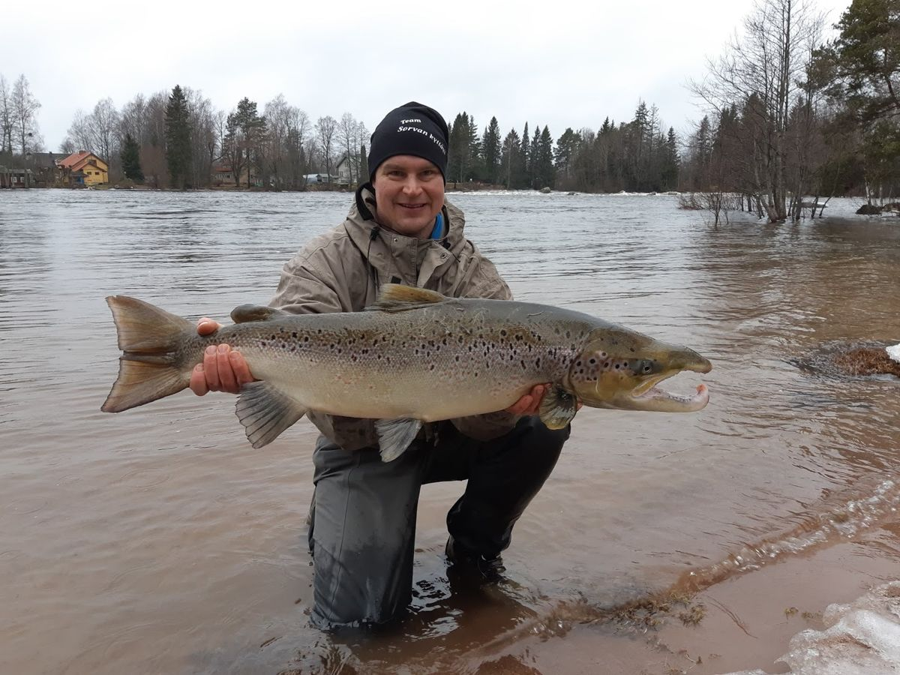
Maaliskuun kohdalla suunnitelmissa lukee näin: Maaliskuu - suurten lajien aika!
Tiedossa on myös, että Kymijoen Siikakoskella voisi Kotkan Kalamaratonissa tutuksi tulleen Petri Ristolan opissa tavoitella talvikkolohia ja taimenia.
Kymijoki: Lohi, taimen
Näin se aloituskuva liittyi tähän tarinaan.
Seuraa ennätyksen etenemistä
Pidän kirjaa lajilistasta ja tarkemmasta retkidatasta Google -taulukossa, joka löytyy jokaisesta ennätysyrityksen postauksesta. Tästä linkistä taulukko avautuu uuteen ikkunaan.
Seurantatilanne löytyy myös blogini oikeasta yläreunasta.
Vuoden aikana ennätysyrityksessä kulkee mukaan myös tämä kalataitelija-graaffikko Sakke Yrjölän suunnittelema SPECIES FIN 53 -merkki.
Paitakulmassa painatin pipoon ja lippikseen saman merkin. Tavoitteeni on saada aikaiseksi 53 saaliskuvaa tekstin alussa tekemääni taulukkoon joissa kaikissa kuvissa näkyisi tuo kyseinen tunnus.
Paitakulma on Suomalainen perheyritys, joka haluaa panostaa laatuun ja asiakastyytyväisyyteen. Tutustu yrityksen palveluihin tästä.